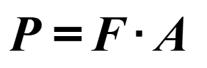
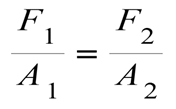
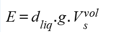
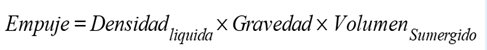
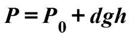

LA HIDROSTATICA
La hidrostática es una rama de la física que estudia los fluidos en reposo, es decir, los fluidos que no están en movimiento. Se centra en los efectos de las fuerzas que actúan sobre estos fluidos, especialmente bajo la influencia de la gravedad. La hidrostática examina cómo la presión se distribuye en un fluido en equilibrio, y cómo esta presión varía con la profundidad y otras condiciones.
Algunos conceptos clave en hidrostática son:
Presión: Es la fuerza por unidad de área que un fluido ejerce sobre una superficie.
Se expresa como:

Donde:
𝑃 es la presión.
𝐹 es la fuerza aplicada
𝐴 es el área sobre la que actúa la fuerza.
Principio de Pascal: Establece que cualquier cambio de presión aplicado a un fluido en reposo se transmite de manera uniforme en todas las direcciones. Este principio es fundamental en dispositivos como los frenos hidráulicos.

Teorema de Arquímedes: Afirma que un cuerpo sumergido en un fluido experimenta una fuerza hacia arriba igual al peso del fluido desplazado por el cuerpo. Este principio es lo que explica por qué los objetos flotan o se hunden en el agua.

Donde:

Presión hidrostática: Es la presión ejercida por un fluido en función de su altura, densidad y la aceleración debida a la gravedad. La fórmula es:

Donde:
𝑃 es la presión
d es la densidad del fluido
𝑔 es la aceleración debido a la gravedad
ℎ es la profundidad del fluido.
La hidrostática tiene aplicaciones prácticas en diversas áreas como la ingeniería, la medicina (por ejemplo, en la medición de la presión arterial), y en la comprensión de fenómenos naturales como la flotación de los barcos o el comportamiento de los líquidos en los océanos y la atmósfera.